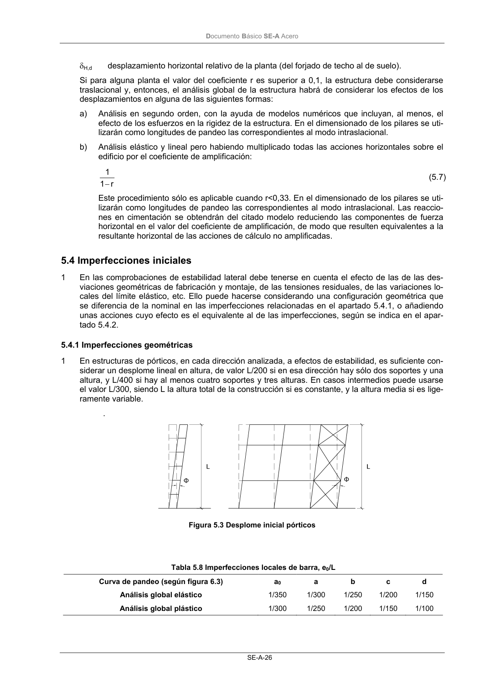
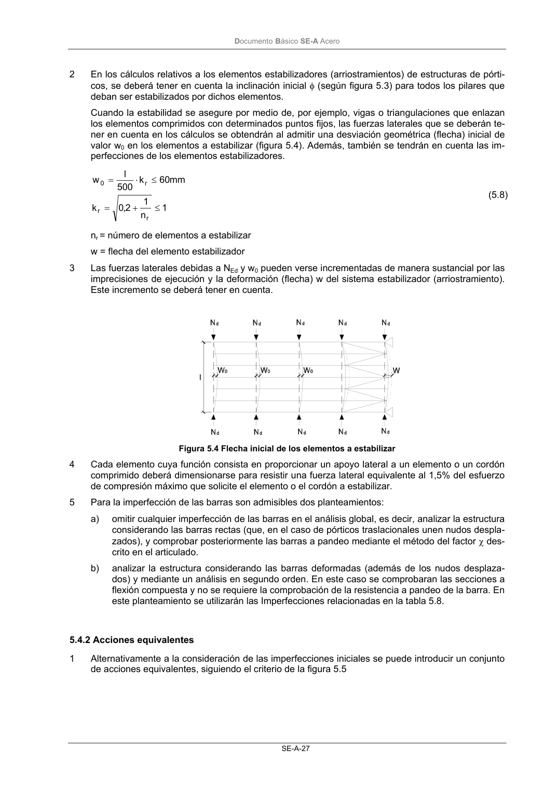

DB-SE-A Acero · edición 2007-10-23 · capa oficial
Documento DB-SE-A-oficial · SHA-256 del PDF 9ed9ea694aabfbda3bfbbef40dfe9223fde05d13c35bc2ba9751e5a96a22a64f
Copia fiel del PDF fuente · Fuente oficial
Ficha de la disposición en la fuente oficial
Formatos: JSON del segmento · Markdown
5.4.1 Imperfecciones geométricas 1 En estructuras de pórticos, en cada dirección analizada, a efectos de estabilidad, es suficiente con- siderar un desplome lineal en altura, de valor L/200 si en esa dirección hay sólo dos soportes y una altura, y L/400 si hay al menos cuatro soportes y tres alturas. En casos intermedios puede usarse el valor L/300, siendo L la altura total de la construcción si es constante, y la altura media si es lige- ramente variable. . Figura 5.3 Desplome inicial pórticos Tabla 5.8 Imperfecciones locales de barra, e0/L Curva de pandeo (según figura 6.3) a0 a b c d Análisis global elástico 1/350 1/300 1/250 1/200 1/150 Análisis global plástico 1/300 1/250 1/200 1/150 1/100 DocumentoBásico SE-A Acero SE-A-27 2 En los cálculos relativos a los elementos estabilizadores (arriostramientos) de estructuras de pórti- cos, se deberá tener en cuenta la inclinación inicial φ (según figura 5.3) para todos los pilares que deban ser estabilizados por dichos elementos. Cuando la estabilidad se asegure por medio de, por ejemplo, vigas o triangulaciones que enlazan los elementos comprimidos con determinados puntos fijos, las fuerzas laterales que se deberán te- ner en cuenta en los cálculos se obtendrán al admitir una desviación geométrica (flecha) inicial de valor w0 en los elementos a estabilizar (figura 5.4). Además, también se tendrán en cuenta las im- perfecciones de los elementos estabilizadores. 1 n 1 2,0 k mm 60 k 500 l w r r r 0 ≤ + = ≤ ⋅ = (5.8) nr = número de elementos a estabilizar w = flecha del elemento estabilizador 3 Las fuerzas laterales debidas a NEd y w0 pueden verse incrementadas de manera sustancial por las imprecisiones de ejecución y la deformación (flecha) w del sistema estabilizador (arriostramiento). Este incremento se deberá tener en cuenta. Figura 5.4 Flecha inicial de los elementos a estabilizar 4 Cada elemento cuya función consista en proporcionar un apoyo lateral a un elemento o un cordón comprimido deberá dimensionarse para resistir una fuerza lateral equivalente al 1,5% del esfuerzo de compresión máximo que solicite el elemento o el cordón a estabilizar. 5 Para la imperfección de las barras son admisibles dos planteamientos: a) omitir cualquier imperfección de las barras en el análisis global, es decir, analizar la estructura considerando las barras rectas (que, en el caso de pórticos traslacionales unen nudos despla- zados), y comprobar posteriormente las barras a pandeo mediante el método del factor χ des- crito en el articulado. b) analizar la estructura considerando las barras deformadas (además de los nudos desplaza- dos) y mediante un análisis en segundo orden. En este caso se comprobaran las secciones a flexión compuesta y no se requiere la comprobación de la resistencia a pandeo de la barra. En este planteamiento se utilizarán las Imperfecciones relacionadas en la tabla 5.8.

